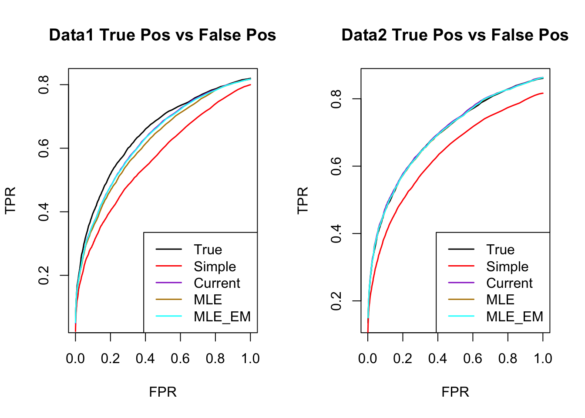

Last updated: 2018-12-03
workflowr checks: (Click a bullet for more information) ✔ R Markdown file: up-to-date
Great! Since the R Markdown file has been committed to the Git repository, you know the exact version of the code that produced these results.
✔ Environment: empty
Great job! The global environment was empty. Objects defined in the global environment can affect the analysis in your R Markdown file in unknown ways. For reproduciblity it’s best to always run the code in an empty environment.
✔ Seed:
set.seed(1)
The command set.seed(1) was run prior to running the code in the R Markdown file. Setting a seed ensures that any results that rely on randomness, e.g. subsampling or permutations, are reproducible.
✔ Session information: recorded
Great job! Recording the operating system, R version, and package versions is critical for reproducibility.
✔ Repository version: 809db08
wflow_publish or wflow_git_commit). workflowr only checks the R Markdown file, but you know if there are other scripts or data files that it depends on. Below is the status of the Git repository when the results were generated:
Ignored files:
Ignored: .DS_Store
Ignored: .Rhistory
Ignored: .Rproj.user/
Ignored: analysis/.DS_Store
Ignored: analysis/.Rhistory
Ignored: analysis/include/.DS_Store
Ignored: code/.DS_Store
Ignored: data/.DS_Store
Ignored: docs/.DS_Store
Ignored: output/.DS_Store
Untracked files:
Untracked: analysis/Classify.Rmd
Untracked: analysis/EstimateCorMash.Rmd
Untracked: analysis/EstimateCorMaxGD.Rmd
Untracked: analysis/EstimateCorMaxMCMash.Rmd
Untracked: analysis/HierarchicalFlashSim.Rmd
Untracked: analysis/MashLowSignalGTEx4.Rmd
Untracked: analysis/Mash_GTEx.Rmd
Untracked: analysis/MeanAsh.Rmd
Untracked: analysis/OutlierDetection.Rmd
Untracked: analysis/OutlierDetection2.Rmd
Untracked: analysis/OutlierDetection3.Rmd
Untracked: analysis/OutlierDetection4.Rmd
Untracked: analysis/mash_missing_row.Rmd
Untracked: code/GTExNullModel.R
Untracked: code/MashClassify.R
Untracked: code/MashCorResult.R
Untracked: code/MashCormVResult.R
Untracked: code/MashNULLCorResult.R
Untracked: code/MashSource.R
Untracked: code/Weight_plot.R
Untracked: code/addemV.R
Untracked: code/estimate_cor.R
Untracked: code/generateDataV.R
Untracked: code/johnprocess.R
Untracked: code/mV.R
Untracked: code/sim_mean_sig.R
Untracked: code/summary.R
Untracked: data/Blischak_et_al_2015/
Untracked: data/scale_data.rds
Untracked: docs/figure/Classify.Rmd/
Untracked: docs/figure/OutlierDetection.Rmd/
Untracked: docs/figure/OutlierDetection2.Rmd/
Untracked: docs/figure/OutlierDetection3.Rmd/
Untracked: docs/figure/Test.Rmd/
Untracked: docs/figure/mash_missing_whole_row_5.Rmd/
Untracked: docs/include/
Untracked: output/AddEMV/
Untracked: output/CovED_UKBio_strong.rds
Untracked: output/CovED_UKBio_strong_Z.rds
Untracked: output/EstCorMLECompare/
Untracked: output/Flash_UKBio_strong.rds
Untracked: output/GTExNULLres/
Untracked: output/GTEx_2.5_nullData.rds
Untracked: output/GTEx_2.5_nullModel.rds
Untracked: output/GTEx_2.5_nullPermData.rds
Untracked: output/GTEx_2.5_nullPermModel.rds
Untracked: output/GTEx_3.5_nullData.rds
Untracked: output/GTEx_3.5_nullModel.rds
Untracked: output/GTEx_3.5_nullPermData.rds
Untracked: output/GTEx_3.5_nullPermModel.rds
Untracked: output/GTEx_3_nullData.rds
Untracked: output/GTEx_3_nullModel.rds
Untracked: output/GTEx_3_nullPermData.rds
Untracked: output/GTEx_3_nullPermModel.rds
Untracked: output/GTEx_4.5_nullData.rds
Untracked: output/GTEx_4.5_nullModel.rds
Untracked: output/GTEx_4.5_nullPermData.rds
Untracked: output/GTEx_4.5_nullPermModel.rds
Untracked: output/GTEx_4_nullData.rds
Untracked: output/GTEx_4_nullModel.rds
Untracked: output/GTEx_4_nullPermData.rds
Untracked: output/GTEx_4_nullPermModel.rds
Untracked: output/MASH.10.em2.result.rds
Untracked: output/MASH.10.mle.result.rds
Untracked: output/MashCorSim--midway/
Untracked: output/Mash_EE_Cov_0_plusR1.rds
Untracked: output/UKBio_mash_model.rds
Untracked: output/mVIterations/
Untracked: output/mVMLEsubset/
Untracked: output/mVUlist/
Untracked: output/result.em.rds
Unstaged changes:
Modified: analysis/EstimateCorMaxMVSample.Rmd
Modified: analysis/Mash_UKBio.Rmd
Modified: analysis/mash_missing_samplesize.Rmd
Modified: output/Flash_T2_0.rds
Modified: output/Flash_T2_0_mclust.rds
Modified: output/Mash_model_0_plusR1.rds
Modified: output/PresiAddVarCol.rds
| File | Version | Author | Date | Message |
|---|---|---|---|---|
| Rmd | 809db08 | zouyuxin | 2018-12-03 | wflow_publish(“analysis/EstimateCorMLECompare.Rmd”) |
I randomly generate 10 positive definite correlation matrices, V. The sample size is 4000.
\[ \hat{z}|z \sim N_{5}(z, V) \] \[ z\sim\frac{1}{4}\delta_{0} + \frac{1}{4}N_{5}(0,\left(\begin{matrix} 1 & \mathbf{0}_{1\times 4} \\ \mathbf{0}_{4\times 1} & \mathbf{0}_{4\times 4} \end{matrix}\right)) + \frac{1}{4}N_{5}(0,\left(\begin{matrix} \mathbf{1}_{2\times 2} & \mathbf{0}_{1\times 3} \\ \mathbf{0}_{3\times 1} & \mathbf{0}_{3\times 3} \end{matrix}\right)) + \frac{1}{4}N_{5}(0,\mathbf{1}_{5\times 5}) \]
devtools::load_all('~/Documents/GitHub/mashr-zou/')Loading mashrLoading required package: ashrgenerate_data = function(n, p, V, Utrue, pi=NULL){
if (is.null(pi)) {
pi = rep(1, length(Utrue)) # default to uniform distribution
}
assertthat::are_equal(length(pi), length(Utrue))
for (j in 1:length(Utrue)) {
assertthat::are_equal(dim(Utrue[j]), c(p, p))
}
pi <- pi / sum(pi) # normalize pi to sum to one
which_U <- sample(1:length(pi), n, replace=TRUE, prob=pi)
Beta = matrix(0, nrow=n, ncol=p)
for(i in 1:n){
Beta[i,] = MASS::mvrnorm(1, rep(0, p), Utrue[[which_U[i]]])
}
E = MASS::mvrnorm(n, rep(0, p), V)
Bhat = Beta + E
Shat = 1
return(list(B = Beta, Bhat=Bhat, Shat = Shat))
}set.seed(100)
n=4000; p = 5
U0 = matrix(0,p,p)
U1 = U0; U1[1,1] = 1
U2 = U0; U2[c(1:2), c(1:2)] = 1
U3 = matrix(1, p,p)
Utrue = list(U0 = U0, U1 = U1, U2 = U2, U3 = U3)
for(t in 1:5){
print(paste0('Data ', t))
Vtrue = clusterGeneration::rcorrmatrix(p)
data = generate_data(n, p, Vtrue, Utrue)
# mash cov
m.data = mash_set_data(Bhat = data$Bhat, Shat = data$Shat)
m.1by1 = mash_1by1(m.data)
strong = get_significant_results(m.1by1)
U.pca = cov_pca(m.data, 3, subset = strong)
U.ed = cov_ed(m.data, U.pca, subset = strong)
U.c = cov_canonical(m.data)
Ulist = c(U.c, U.ed)
V.true = vector('list', 3)
m.data.true = mash_update_data(m.data, V = Vtrue)
V.true$V = Vtrue
V.true$m.model = mash(m.data.true, Ulist, verbose = FALSE)
V.true$time = 0
V.simple = vector('list', 3)
outtime.simple = system.time(V.simple$V <- estimate_null_correlation_simple(m.data))
V.simple$time = outtime.simple["elapsed"]
m.data.simple = mash_update_data(m.data, V = V.simple$V)
V.simple$mash.model = mash(m.data.simple, Ulist, verbose = FALSE)
print('Current')
outtime.current = system.time(V.current <- estimate_null_correlation(m.data, Ulist, max_iter = 100, tol = 1e-2))
V.current$time = outtime.current["elapsed"]
print('New mle')
outtime.mle = system.time(V.mle <- estimate_null_correlation_mle(m.data, Ulist, max_iter = 100, tol=1e-2))
V.mle$time = outtime.mle["elapsed"]
print('New mle em')
outtime.mle.em = system.time(V.mle.em <- estimate_null_correlation_mle_em(m.data, Ulist, max_iter = 100, tol=1e-2))
V.mle.em$time = outtime.mle.em["elapsed"]
saveRDS(list(V.true = V.true, V.simple = V.simple, V.current = V.current, V.mle = V.mle, V.mle.em = V.mle.em, data = data),
paste0('../output/EstCorMLECompare/MASH.result.',t,'.rds'))
}files = dir("../output/EstCorMLECompare/"); files = files[grep("MASH.result",files)]
times = length(files)
result = vector(mode="list",length = times)
for(i in 1:times) {
result[[i]] = readRDS(paste("../output/EstCorMLECompare/", files[[i]], sep=""))
}for(i in 1:times){
m.data = mash_set_data(result[[i]]$data$Bhat, result[[i]]$data$Shat)
m.1by1 = mash_1by1(m.data)
strong = get_significant_results(m.1by1)
U.c = cov_canonical(m.data)
U.pca = cov_pca(m.data, 3, subset = strong)
U.ed = cov_ed(m.data, U.pca, subset = strong)
Ulist = c(U.c, U.ed)
m.data.mle = mash_update_data(m.data, V = result[[i]]$V.mle$V)
result[[i]]$V.mle$mash.model$result = mash_compute_posterior_matrices(result[[i]]$V.mle$mash.model, m.data.mle)$result
}library(ggplot2)
for(i in 1:times){
tmp = data.frame(loglik = c(result[[i]]$V.current$loglik, result[[i]]$V.mle$loglik, result[[i]]$V.mle.em$loglik), method = c(rep('current', length(result[[i]]$V.current$loglik)),rep('mle', length(result[[i]]$V.mle$loglik)), rep('mle_em', length(result[[i]]$V.mle.em$loglik))),
iter = c(1:length(result[[i]]$V.current$loglik), 1:length(result[[i]]$V.mle$loglik), 1:length(result[[i]]$V.mle.em$loglik)))
# plot(tmp$iter, tmp$loglik)
print(ggplot(tmp, aes(x = iter, y=loglik, color = method)) + geom_line())
}The Frobenius norm is
temp = matrix(0,nrow = times, ncol = 4)
for(i in 1:times){
temp[i, ] = c(norm(result[[i]]$V.simple$V - result[[i]]$V.true$V, type = 'F'),
norm(result[[i]]$V.current$V - result[[i]]$V.true$V, type = 'F'),
norm(result[[i]]$V.mle$V - result[[i]]$V.true$V, type = 'F'),
norm(result[[i]]$V.mle.em$V - result[[i]]$V.true$V, type = 'F'))
}
colnames(temp) = c('Simple','Current', 'MLE', 'MLE_eM')
temp = reshape2::melt(temp)
colnames(temp) = c('Data', 'Method', 'FrobError')
ggplot(temp, aes(x = Data, y=FrobError, group = Method, color = Method)) + geom_line()The spectral norm is
temp = matrix(0,nrow = times, ncol = 4)
for(i in 1:times){
temp[i, ] = c(norm(result[[i]]$V.simple$V - result[[i]]$V.true$V, type = '2'),
norm(result[[i]]$V.current$V - result[[i]]$V.true$V, type = '2'),
norm(result[[i]]$V.mle$V - result[[i]]$V.true$V, type = '2'),
norm(result[[i]]$V.mle.em$V - result[[i]]$V.true$V, type = '2'))
}
colnames(temp) = c('Simple','Current', 'MLE', 'MLE_EM')
temp = reshape2::melt(temp)
colnames(temp) = c('Data', 'Method', 'SpecError')
ggplot(temp, aes(x = Data, y=SpecError, group = Method, color = Method)) + geom_line()The total running time for each matrix is
current.time = mle.time = mle.em.time = numeric(times)
for(i in 1:times){
current.time[i] = result[[i]]$V.current$time
mle.time[i] = result[[i]]$V.mle$time
mle.em.time[i] = result[[i]]$V.mle.em$time
}
temp = cbind(current.time, mle.time, mle.em.time)
colnames(temp) = c('current', 'mle', 'mle_em')
row.names(temp) = 1:5
temp = reshape2::melt(temp)
colnames(temp) = c('Data', 'Method', 'Time')
ggplot(temp, aes(x = Data, y=Time, group = Method, color = Method)) + geom_line()temp = matrix(0,nrow = times, ncol = 5)
for(i in 1:times){
temp[i, ] = c(get_loglik(result[[i]]$V.true$m.model), get_loglik(result[[i]]$V.simple$mash.model), get_loglik(result[[i]]$V.current$mash.model),
get_loglik(result[[i]]$V.mle$mash.model), get_loglik(result[[i]]$V.mle.em$mash.model))
}
colnames(temp) = c('True', 'Simple','Current', 'MLE', 'MLE_EM')
temp = reshape2::melt(temp)
colnames(temp) = c('Data', 'Method', 'loglikelihood')
ggplot(temp, aes(x = Data, y=loglikelihood, group = Method, color = Method)) + geom_line()ROC.table = function(data, model){
sign.test = data*model$result$PosteriorMean
thresh.seq = seq(0, 1, by=0.005)[-1]
m.seq = matrix(0,length(thresh.seq), 2)
colnames(m.seq) = c('TPR', 'FPR')
for(t in 1:length(thresh.seq)){
m.seq[t,] = c(sum(sign.test>0 & model$result$lfsr <= thresh.seq[t])/sum(data!=0),
sum(data==0 & model$result$lfsr <=thresh.seq[t])/sum(data==0))
}
return(m.seq)
}
plotROC = function(data.true, resulti, title){
m.simple.seq = ROC.table(data.true, resulti$V.simple$mash.model)
m.current.seq = ROC.table(data.true, resulti$V.current$mash.model)
m.mle.seq = ROC.table(data.true, resulti$V.mle$mash.model)
m.mle.em.seq = ROC.table(data.true, resulti$V.mle.em$mash.model)
m.true.seq = ROC.table(data.true, resulti$V.true$m.model)
plot(m.true.seq[,'FPR'], m.true.seq[,'TPR'],type='l',xlab = 'FPR', ylab='TPR',
main=paste0(title, 'True Pos vs False Pos'), cex=1.5, lwd = 1.5)
lines(m.simple.seq[,'FPR'], m.simple.seq[,'TPR'], col='red', lwd = 1.5)
lines(m.current.seq[,'FPR'], m.current.seq[,'TPR'], col='darkorchid', lwd = 1.5)
lines(m.mle.seq[,'FPR'], m.mle.seq[,'TPR'], col='darkgoldenrod', lwd = 1.5)
lines(m.mle.em.seq[,'FPR'], m.mle.em.seq[,'TPR'], col='cyan', lwd = 1.5)
legend('bottomright', c('True','Simple', 'Current', 'MLE', 'MLE_EM'),col=c('black','red','darkorchid','darkgoldenrod', 'cyan'),
lty=c(1,1,1,1,1), lwd=c(1.5,1.5,1.5,1.5,1.5))
}par(mfrow=c(1,2))
for(i in 1:times){
plotROC(result[[i]]$data$B, result[[i]], title=paste0('Data', i, ' '))
}
RRMSE = function(datatrue, dataobs, resulti){
rrmse = c(sqrt(mean((datatrue - result[[i]]$V.true$m.model$result$PosteriorMean)^2)/mean((datatrue - dataobs)^2)),
sqrt(mean((datatrue - result[[i]]$V.simple$mash.model$result$PosteriorMean)^2)/mean((datatrue - dataobs)^2)),
sqrt(mean((datatrue - result[[i]]$V.current$mash.model$result$PosteriorMean)^2)/mean((datatrue - dataobs)^2)),
sqrt(mean((datatrue - result[[i]]$V.mle$mash.model$result$PosteriorMean)^2)/mean((datatrue - dataobs)^2)),
sqrt(mean((datatrue - result[[i]]$V.mle.em$mash.model$result$PosteriorMean)^2)/mean((datatrue - dataobs)^2)))
return(rrmse)
}
par(mfrow=c(1,2))
for(i in 1:times){
rrmse = rbind(RRMSE(result[[i]]$data$B, result[[i]]$data$Bhat, result[[i]]))
barplot(rrmse, ylim=c(0,(1+max(rrmse))/2), las=2, cex.names = 0.7, main='RRMSE', names.arg = c('True','Simple', 'Current', 'MLE', 'MLE_EM'))
}sessionInfo()R version 3.5.1 (2018-07-02)
Platform: x86_64-apple-darwin15.6.0 (64-bit)
Running under: macOS 10.14.1
Matrix products: default
BLAS: /Library/Frameworks/R.framework/Versions/3.5/Resources/lib/libRblas.0.dylib
LAPACK: /Library/Frameworks/R.framework/Versions/3.5/Resources/lib/libRlapack.dylib
locale:
[1] en_US.UTF-8/en_US.UTF-8/en_US.UTF-8/C/en_US.UTF-8/en_US.UTF-8
attached base packages:
[1] stats graphics grDevices utils datasets methods base
other attached packages:
[1] ggplot2_3.1.0 mashr_0.2.20 testthat_2.0.1 ashr_2.2-23
loaded via a namespace (and not attached):
[1] Rcpp_1.0.0 mvtnorm_1.0-8 lattice_0.20-35
[4] prettyunits_1.0.2 ps_1.1.0 Rmosek_8.0.69
[7] assertthat_0.2.0 rprojroot_1.3-2 digest_0.6.18
[10] foreach_1.4.4 truncnorm_1.0-8 R6_2.3.0
[13] plyr_1.8.4 backports_1.1.2 evaluate_0.12
[16] pillar_1.3.0 rlang_0.3.0.1 lazyeval_0.2.1
[19] pscl_1.5.2 rstudioapi_0.8 whisker_0.3-2
[22] callr_3.0.0 R.utils_2.7.0 R.oo_1.22.0
[25] Matrix_1.2-14 rmarkdown_1.10 labeling_0.3
[28] desc_1.2.0 devtools_2.0.1 stringr_1.3.1
[31] REBayes_1.3 munsell_0.5.0 compiler_3.5.1
[34] pkgconfig_2.0.2 base64enc_0.1-3 pkgbuild_1.0.2
[37] SQUAREM_2017.10-1 htmltools_0.3.6 tidyselect_0.2.5
[40] tibble_1.4.2 workflowr_1.1.1 codetools_0.2-15
[43] crayon_1.3.4 dplyr_0.7.6 withr_2.1.2
[46] MASS_7.3-50 R.methodsS3_1.7.1 grid_3.5.1
[49] gtable_0.2.0 git2r_0.23.0 magrittr_1.5
[52] scales_1.0.0 cli_1.0.1 stringi_1.2.4
[55] reshape2_1.4.3 fs_1.2.6 remotes_2.0.2
[58] bindrcpp_0.2.2 doParallel_1.0.14 rmeta_3.0
[61] iterators_1.0.10 tools_3.5.1 glue_1.3.0
[64] purrr_0.2.5 processx_3.2.0 abind_1.4-5
[67] pkgload_1.0.1 parallel_3.5.1 yaml_2.2.0
[70] colorspace_1.3-2 sessioninfo_1.1.1 memoise_1.1.0
[73] bindr_0.1.1 knitr_1.20 usethis_1.4.0 This reproducible R Markdown analysis was created with workflowr 1.1.1